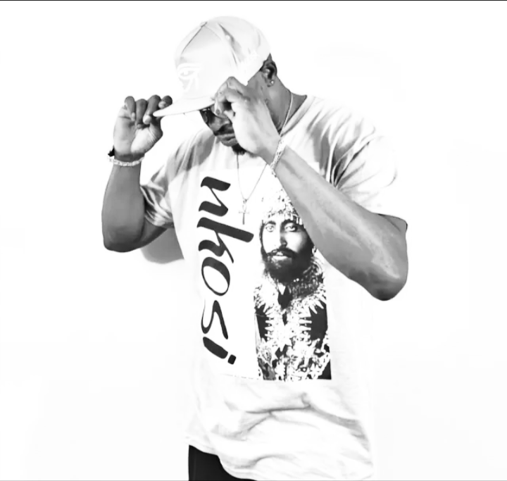
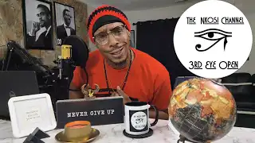

Leon A. Simpson, professionally known as NKOSI, is a multifaceted African American minister, rapper, author, movie director, music business consultant, entertainer, motivational speaker, certified audio engineer, and radio personality. He is the host of Chosen1Records Radio, a digital show dedicated to uplifting voices in music and culture.
NKOSI received his certification from The Recording Workshop in Chillicothe, Ohio, and completed an internship at the Tupac Amaru Shakur Foundation in Stone Mountain, Georgia. Throughout his career, he has collaborated with legendary figures such as David “Pic” Conley of the pioneering group Surface and DJ Ron G from Harlem, New York.
Early in his career, NKOSI shared stages with industry icons including Alicia Keys and Pharrell Williams of The Neptunes, and performed at T.D. Jakes` Megafest 2005 in the Georgia Ballroom. He has also opened for artists such as Heather B, Gucci Mane, and Boo & Gotti.
NKOSI`s production and recording journey includes working with Lil Chucky of Young Money Records and Screwface, producer for Bad Boy`s R&B group Day 26. His talent attracted interest from multiple labels, including offers from David Pic Conley and Marvin L. McIntyre of Marvelous Records.
Inspired by mentors like Alvin Speights (5X Grammy Award winner) and Cirocco Jones (author of The Music Powers That Be), NKOSI pursued formal education to deepen his understanding of the music industry. Through his independent record label, he successfully launched Chosen1Records Radio, which has featured interviews with notable artists such as Sleepy Wonder (reggae legend) and Cormega (Queensbridge hip-hop artist), among many others.

NKOSI has grown his Youtube channel to 50,000 subscribers and over 500,000 views in 6 months and recently launched a clothing brand that supports his message. You can find his music and teachings on his Youtube channel @NKOSI-777.
A man of deep faith, NKOSI is God-fearing, honest, hardworking, consistent, persistent, and punctual. His passion for music and ministry continues to inspire and uplift audiences worldwide.
✨ Faith. Focus. Fire.
NKOSI is more than an artist — he`s a movement.